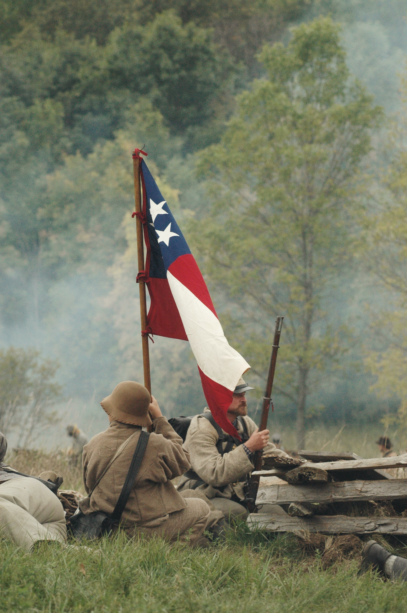

전간기(戰間期)는 제1차 세계 대전 종결에서 제2차 세계 대전 발발까지 즉, 기본적으로는 1918년 11월 11일에서 1939년 9월 1일까지의 시대이다. 세계사 전체에서, 특히 유럽의 역사에서 중요하다.
이 시기에 세계 경제의 중심은 유럽이 아닌 북아메리카, 더 정확하게는 미국으로 옮겨 갔으며, 역설적으로 그것은 미국에서 일어난 대공황이 세계 전체로 퍼져 세계 대공황을 만들어 냈다는 것으로 여실히 증명되었다. 지금의 미국과는 다르게, 전간기의 미국은 철저히 고립주의적인 국가였다. 그 일본 제국과도 외교로 해결하려 했을 정도로. 전간기의 일은 아니지만, 제2차 세계 대전 초중반에도 미국의 고립주의적 성향은 여전해 렌드리스 정책으로 연합국에게 도움을 줬을지언정 참전은 하지 않았다.[2] 추축국 입장에서는 무기는 줬지만 참전은 하지 않았다 정도로밖에 생각되지 않겠지만, 법적으로 따지자면 독일이나 이탈리아 같은 추축국도 렌드리스에 따라 무기를 수령할 수 있었다.